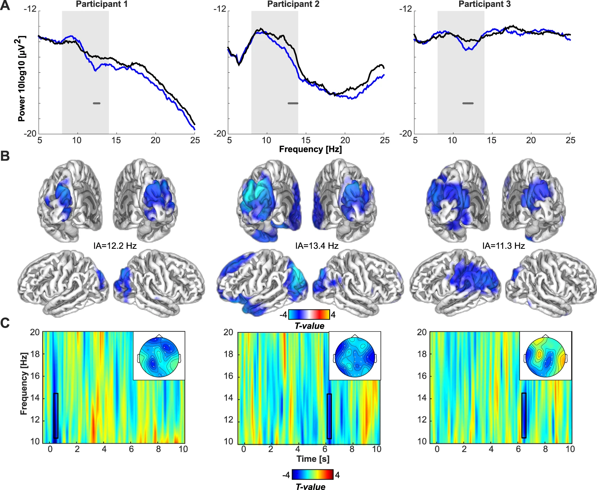

SSVEPs have many applications, including for Brain to Computer Interfaces, or BCIs. SSVEPs make use of frequencies that the visual cortex repeats upon a human looking at such frequencies within a certain range. This can be used in many cases, including typing with the brain. This is especially significant in helping technology be more accessible. One example of this could be for those who are paralyzed. Here is a study about the range of frequencies that can be read by an EEG, and a video depicting one of the few possible applications:
Multiple Frequencies Sequential Coding for SSVEP-Based Brain-Computer InterfaceSteady State Visual Evoked Potentials (SSVEP)
October 7, 2025
